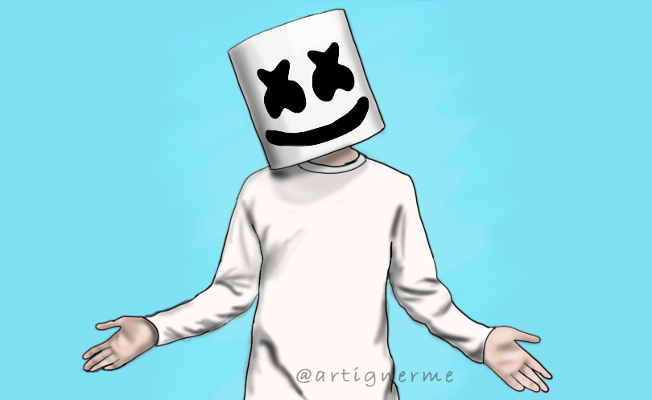
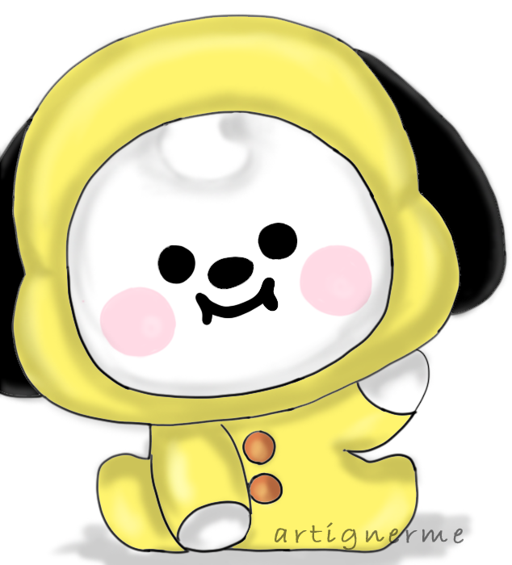
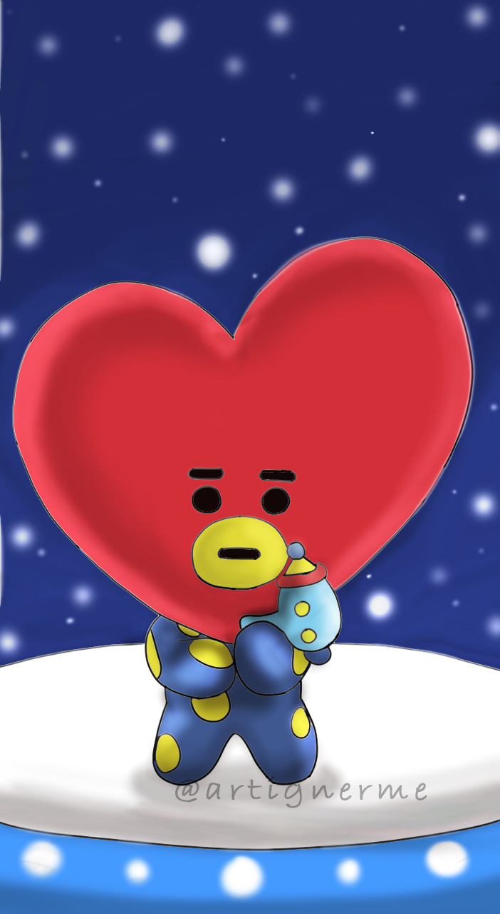
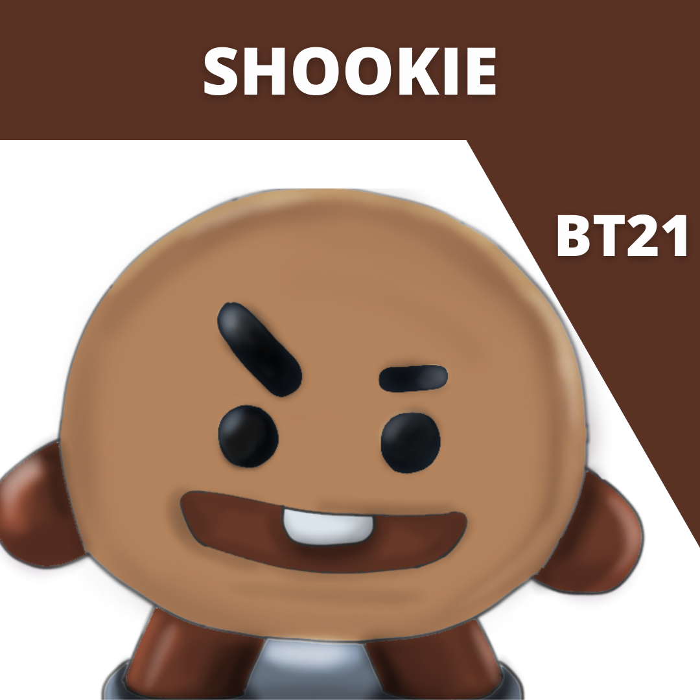
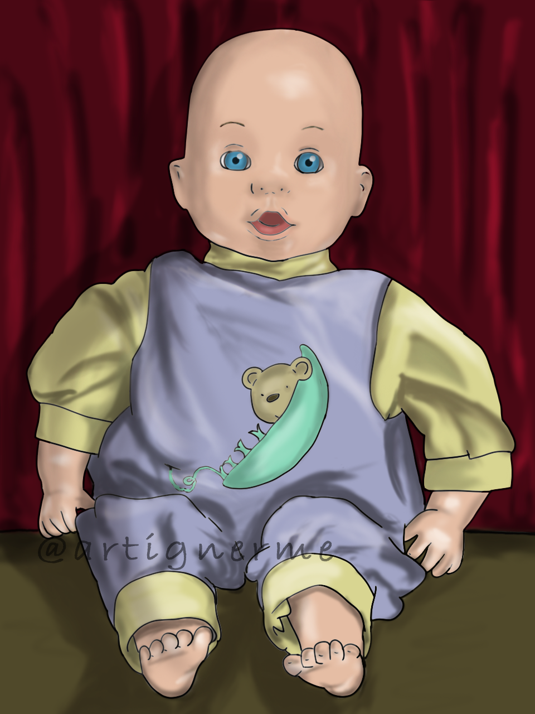
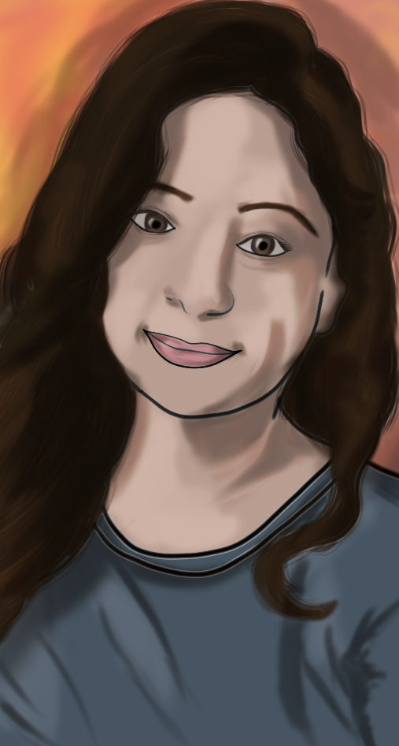
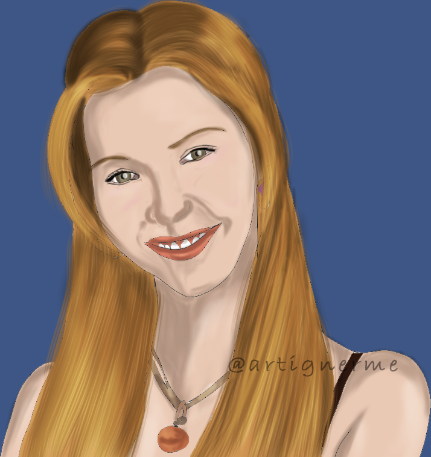
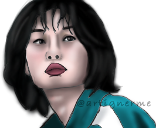
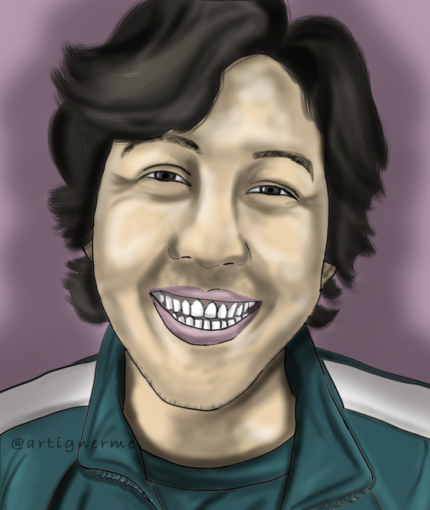

﴾BACKSTORIES OF ILLUSTRATIONS﴿
-

Marshmello
This is a fanart of the famous Western singer Marshmello. This was made
on Photoshop. It was comparatively easy than others I had made earlier.
-

Chimmy
This is Chimmy, the BT21 representative character
of Park Ji-Min of BTS, a South-Korean boy-band. I made this as a request was made to me by my friend (who
is also a fan of BTS like me) when she thought I could make this cute kid easily. Here is the result. Made on Photoshop.
-

Tata
This is Tata, the BT21 representative character
of Kim Tae-Hyung of BTS. My friend wanted me to make all the characters. So, it is one of those.
-

RJ
This is RJ, the BT21 representative character
of Kim Seok-Jin of BTS. I used a different technique to make this but it was still made on Photoshop. Resembles the rel one, doesn't it?
-

Shookie
This is Shookie, the BT21 representative character
of Jeon Jung-Kook of BTS. I like the effects on its body that were made using Overlay and white color in Photoshop. It is basically a cookie.
-

Bubby
This is Bubby, a baby-doll I own,
which my grandmother's mother bought for me when she went to England. She is no more
but I love this doll so much that it is always with me and that's why I made this. Made on Photoshop.
-

Chanraj Sekhon
This is what I made for a client who viewed and liked my work on Instagram
and wanted me to make a portrait for him to put in a frame in his room. I also earned for making this and got a 5-star rating for this. Made on Photoshop.
-

Kashish
I made this portrait for a friend-cum-client. She liked the work I used to send on our WhatsApp group and wanted me to make one for her. Made on Photoshop.
-

Go Ara as Ah Ro in Hwarang
This is a portrait
of a popular Korean drama actress, named Go Ara, who played the main lead named Ah Ro in a kdrama "Hwarang". Made on Photoshop.
-

Hermione Granger
This is the first ever portrait I made. This portrait got a lot of praises
from my friends and teachers and inspired me to work on my skills and make more such portraits.
-

Phoebe Buffay
This is Lisa Kudrow, the actress who played Phoebe Buffay in the famous American
sitcom Friends. This wasn't my best work but it took quite a lot of efforts to make her. Made on Photoshop.
-

Kang Sae Byeok
This is the portrait of Kang Sae Byeok, or Player 067, successfully
and excellently portrayed by Korean actress, Jung Ho-Yeon.
-

Seong Gi Hun
This is the portrait of the veteran Korean actor, Lee Jung Jae, playing Seong Gi Hun, a debt-ridden gambler. I like the story and it was a trending
show too, so I decided to make this portrait. Made on: Photoshop.
-

A Lazy Girl
This is my first ever illustration. This was when I didn't know anything about using Photoshop. I also got appreciated by my professor who said
that it is a very calming scene. It motivated me a lot to keep going. Made on MS Paint.